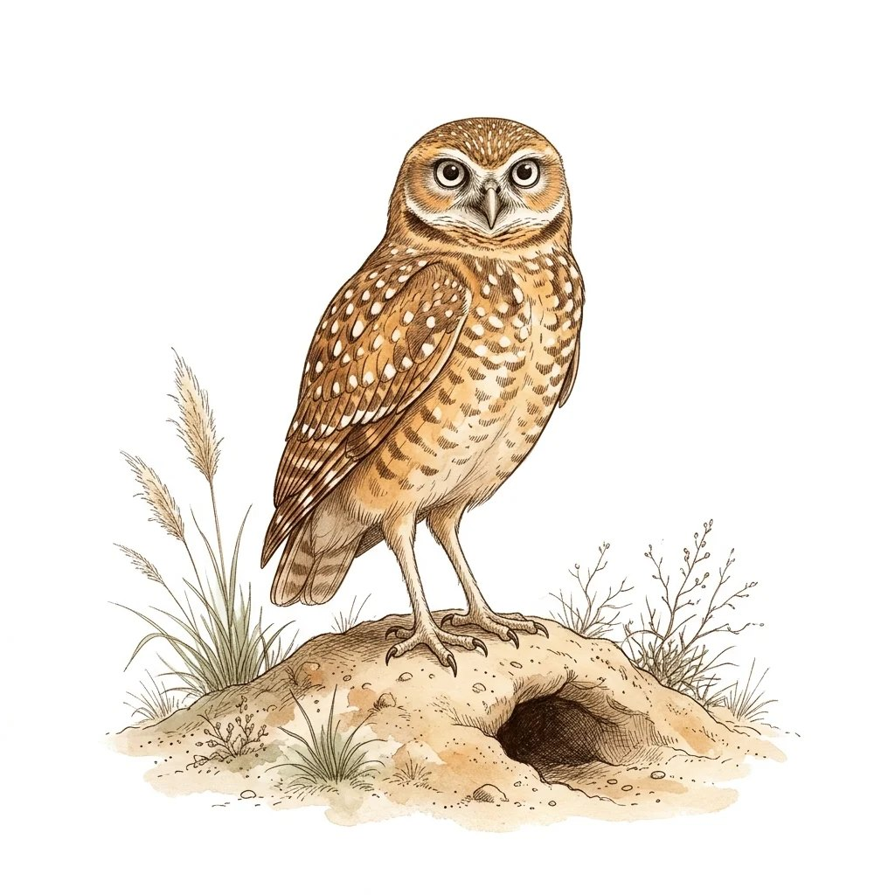
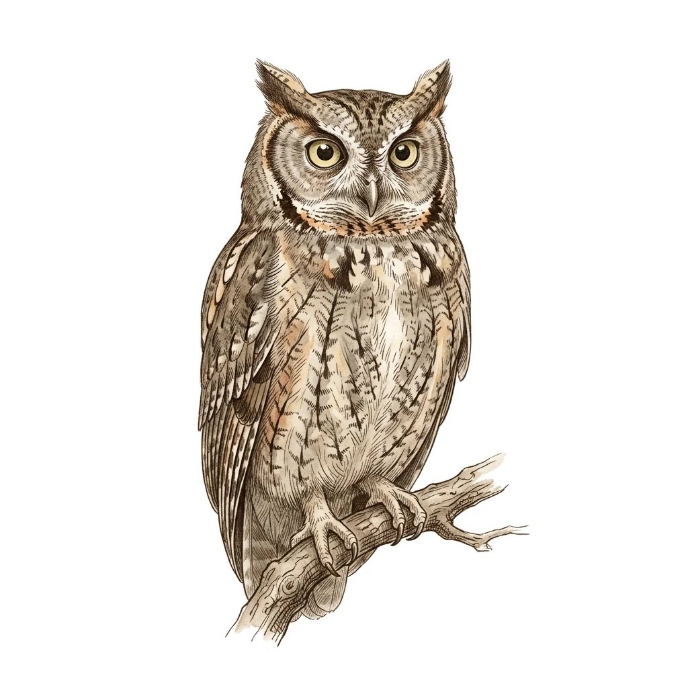

IA Aplicada · Atividade 4
Juízes de segurança de LLM em português
Medindo o efeito da línguaCristhian Kapelinski
Atividades 1 a 3 · 08/09/2026

Atividade 1 · O problema
Como se mede segurança de LLM
- envia-se um ataque e olha-se a resposta
- quem rotula nocivo ou seguro é outro LLM
- a taxa de sucesso do ataque sai do rótulo
Rotular à mão não escala. O juiz é automático.
02Atividade 1 · O problema
Juiz: de onde sai a taxa
Toda taxa de sucesso publicada sai daqui.
03Atividade 1 · O problema
Mudar o texto quebra o juiz
O conteúdo nocivo fica. O juiz deixa de ver.
04Atividade 1 · A lacuna
Língua: não medida
05Atividade 1 · A proposta
Falso negativo: só em inglês
resposta nociva liberada como segura (0 a 1)
| Juiz | EN base | reescrito | PT-BR |
|---|---|---|---|
| HarmBench | 0,12 | 0,36 | ? |
| ShieldGemma | 0,50 | 0,70 | ? |
| WildGuard | 0,02 | 0,12 | ? |
| LLaMA Guard | 0,04 | 0,02 | ? |
a coluna que o projeto vai preencher
06Atividade 2 · O que já existe pronto
Nada a coletar, nada a treinar
conjuntos públicos já com rótulo humano
juízes abertos, rodando só em inferência
baseline: buscar palavra-chave numa lista
Cabe no semestre porque reusa o que existe.
07Atividade 2 · O achado
Traduzir muda o rótulo
O rótulo “nocivo” não sobrevive à tradução.
08Atividade 3 · O plano
Arquitetura: quatro etapas
Nada é treinado: treinar mudaria o juiz.
09Atividade 3 · Avaliação
Critérios fixados antes de rodar
- reproduzir os valores já publicados em inglês
- medir a diferença com intervalo de confiança
Qualquer resultado é resultado.
10Atividade 3 · Protótipo mínimo
MVP: um juiz e 30 pares
- um juiz funcionando de ponta a ponta
- 30 pares em PT-BR revalidados
- as primeiras métricas comparadas
Próximo passo: medir o descarte.
11Obrigado!
Perguntas são bem-vindas
Cristhian Kapelinski
cristhianavila.aluno@unipampa.edu.br
